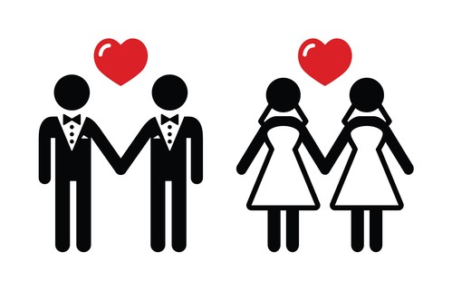

Discriminación Sexual
Discriminación por Sexo
La discriminación por sexo consiste en tratar a una persona (empleado o solicitante de empleo) de manera no favorables la discriminaciónpor sexo también puede hacer referencia a tratar a una persona de manera menos favorable por su relación con una organización o grupo que,
generalmente, está asociado con personas de un determinado sexo.

La ley prohíbe la discriminación cuando se trata de cualquier aspecto del empleo, como la contratación, el despido, la remuneración,
las asignaciones laborales, los ascensos, el despido temporal, la capacitación, los beneficios complementarios y cualquier otro término o condición de empleo.
Ilegal
Es ilegal acosar a una persona por el sexo, el acoso puede incluir "acoso sexual" o avances sexuales indeseados,solicitudes de favores sexuales y otro tipo de acoso verbal o físico de naturaleza sexual. El acoso no tiene que ser solo de naturaleza sexual,
sino que también puede incluir comentarios ofensivos sobre el sexo de una persona.
Por ejemplo, es ilegal acosar a una mujer al hacer comentarios ofensivos sobre las mujeres en general.

Consecuencias de la Discriminación Sexual
Tiene consecuencias graves y de un gran alcance a la salud, su bienestar y sus derechos humanos. Esas pueden ser:la reducción de su calidad de vida, aislamiento social y soledad, la restricción de su capacidad de expresar su sexualidad,
el aumento de violencia, abuso y en el peor de los casos suicidio.

Leyes
El titulo IX de las enmiendas del código de educación, una ley federal titulada título IX que prohíbe el discrimen por sexo que prohíbeel titulo IX no solo incluye el hostigamiento sexual y el descimen por no conformarse a los estereotipos de género.
En varios casos en donde se ve involucrada alguna escuela, las victimas LGBT de discrimen y hostigamiento sexual se ha
apoyado exitosamente en las garantías amparadas por el título IX.